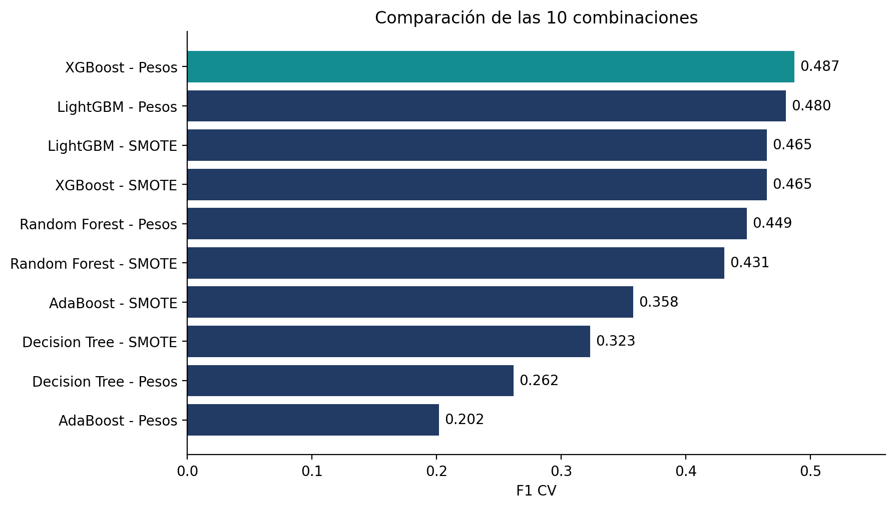

Detección de fraude:
del modelo a la decisión.
IEEE-CIS Fraud Detection · Ensambles, costos de clasificación y selección de umbrales.
Equipo: Miguel González · Jorge Moscoso · Francisca Palacios
Profesor: Danilo Gómez Correa
Dashboard en Streamlit
Simulador interactivo de costos, umbrales, matriz de confusión y escenarios económicos. Utiliza los resultados oficiales incluidos.
- Extraer todo el ZIP en Windows.
- Hacer doble clic en
01_INICIAR_DASHBOARD.bat. - En la primera ejecución se instala el entorno (Python 3.12 recomendado e internet).
- Se abre en
http://localhost:8501.
Sin reentrenamiento. No requiere el dataset.
Trabajo en Google Colab
Desarrollo por etapas: exploración, SMOTE, pesos, CV, evaluación, costos, sensibilidad y dashboard interactivo.
- Abrir notebook .ipynb en Google Colab.
- Mantener
MODO = 'resultados'. - Subir
Resultados_Certamen1.zipcuando lo solicite. - Ejecutar las celdas en orden.
El modo entrenar permite reproducir todo con el dataset original de Kaggle.
Evidencia descargable
Los CSV y JSON exportados de Colab están en resultados/. Los gráficos PNG de alta resolución están en graficos/.


Costos y límites
En el conjunto de prueba, el umbral 0,5 implicó $45.370.000 y el umbral empírico CV $35.400.000, usando FP = $5.000 y FN = $50.000.
Los costos son supuestos académicos; no equivalen a beneficios reales anuales. El modelo se seleccionó por F1 CV, sin usar test para escogerlo.
GUIA_RAPIDA.txt.